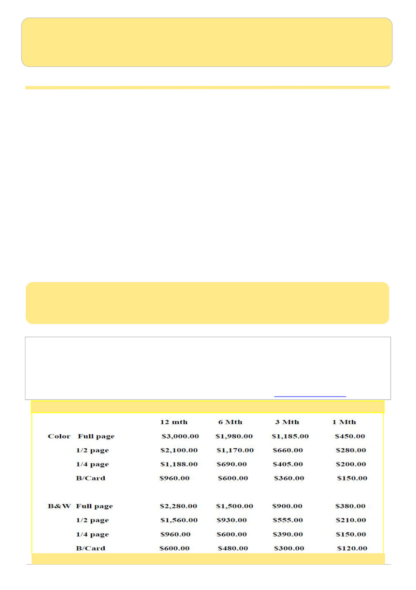

April 2026
3
AUSTRALIAN BEE JOURNAL
Published since 1918 by the VAA - founded in 1892 -
Registration No. A8347
APRIL 2026 - Volume 107 - No 4
Deadline for copy for the May 2026 journal is
10pm on Friday 1st of May 2026.
The Australian Bee Journal seeks to publish contributions dealing with all aspects of beekeeping.
Statements expressed by contributors do not necessarily reflect the views of the VAA Inc or the editor.
Editor: Annette Engstrom
Contact the Editor for ads, photos, classifieds and article information
The Editor, Australian Bee Journal, P.O. Box 42 Newstead, VIC. 3462 Email: abjeditors@yahoo.com
Australian Bee Journal Advertising rates
2-page ad - $4800.00 - available for 12 month contract only
Preparing Your Hive For Winter
Research Uncovers Colony Health
AHBIC Media Release: Varroa Investigation
Classifieds / Members / Index of Advertisers
Cover photo: Jamie Trimby
Lid of a 6 frame poly nucleus hive filled with honey